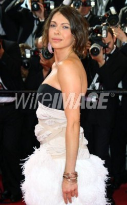

#12300 Was nützt die Liebe in Gedanken

 IMDB-Wertung: 7.1 / 10
IMDB-Wertung: 7.1 / 10  Metascore: 0
Metascore: 0 
Gibt es ihn wirklich, den höchsten Punkt im Leben? Günther und Paul sind davon überzeugt. Sie wollen leben, in vollen Zügen und ohne Kompromisse - und gleiches verlangen sie von der Liebe. Gemeinsam mit Günthers Schwester Hilde verbringen sie das Wochenende in einem Sommerhaus auf dem Land. Paul ist fasziniert von dem Mädchen und verliebt sich in sie. Und zunächst sieht es so aus, als ob Pauls Gefühle erwidert werden. Doch Hilde liebt viele. Heimlich trifft sie sich mit Hans - Günthers ehemaligem Liebhaber.
Jahr: 2004
Dauer: 85 Minuten
FSK: 16
Land: Deutschland Studio: X Verleih AGTonspuren:
Untertitel:
Auflösung: 1080p (1920x1080) Größe: 3655 MB
Genre: Drama, Liebe
Regisseur: Achim von Borries
Drehbuch: Henk Handloegten, Annette Hess, Alexander Pfeuffer, Achim von Borries
Soundtrack: Thomas Feiner, Ingo Frenzel
Darsteller:
- Daniel Brühl als Paul Krantz
- August Diehl als Günther Scheller
- Anna Maria Mühe als Hilde Scheller
-  Jana Pallaske als Elli
 Thure Lindhardt als Hans
Thure Lindhardt als Hans Julia Dietze als Lotte
Julia Dietze als Lotte- Buddy Elias als Dr. Frey
- Holger Handtke als Wieland
- Tino Mewes als Django
 Ivan Shvedoff als Gast im Moka Efti
Ivan Shvedoff als Gast im Moka Efti- Verena Bukal als Rosa
- Luc Feit als Zipfer
- Marius Frey als Bittner
- Jonas Jägermeyr als Pit
- Roman Kaminski als Vorsitzender bei Gericht
- Christoph Luser als Macke
- Thomas Neumann als Kommissar Peters
- Thomas Schendel als Kommissar Kraus
- Fabian Oscar Wien als Fritz
- Jürgen Wink als Lehrer Krähe
- Melek Diehl als Partyguest
- Clemens Fickweiler als Partyguest
- Daniel Hischer als Partyguest
- Nele Kalau als Partyguest
- Monika Küpker als Partyguest
- Kai Krambeer als Partyguest
- Bodo Maier als Partyguest
- Ivonne Meyer als Partyguest
- Nicolai Paschke als Partyguest
- Helena Pistor als Partyguest
- Olga Regier als Partyguest
- Anna-Zoe Schmidt als Partyguest
- Michael Schreiber als Partyguest
- Undine Spiller als Partyguest
- Ralf Hentschel als Partyguest
- Alexander Keller als Jugendlicher
- Alexander Probst als Jugendlicher
- Alexander Zaiak als Dunkler Mann
Datei: X:\2004(N-Z)\Was nützt die Liebe in Gedanken (2004, FSK16, 1920x1080).mkv seit 12.01.2020
Festplatte: Gemischt-01+Anime
 Es gibt insgesamt 54 Filme in der Gruppe '2004(N-Z)'
Es gibt insgesamt 54 Filme in der Gruppe '2004(N-Z)'